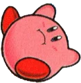

Characteristics
01
Small pink spherical creature with two stubby arms, two red feet and two oval-shaped eyes with black pupils.
02
Does not appear to have a skeleton, organs, blood, or teeth. He does, however, have a tongue, as evidenced when he inhales.
03
Movements roughly resemble that of a human, suggesting a basic form of muscle structure.
04
Body is soft and flexible, allowing him to flatten himself or expand like a balloon.
05
Officially he is 20 centimeters (8 inches) tall. Weight is unknown.
FACT SHEET | KIRBY KIRBYSON
Evolution
FACT SHEET | KIRBY KIRBYSON
Gallery
FACT SHEET | KIRBY KIRBYSON